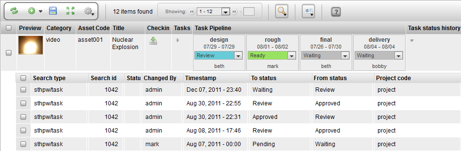

The Task Status History is a toggle that opens a hidden row that displays all the status changes for an item. If there are multiple processes for an item, the status updates for those processes will be displayed.
|
Name |
Task Status History |
|
Class |
tactic.ui.panel.TableLayoutWdg |
|
Category |
Common Columns |
|
TACTIC Version Support |
3.0+ |
|
Required database columns |
none |
<element name="task_status_history">
<display class="HiddenRowToggleWdg">
<dynamic_class>tactic.ui.panel.TableLayoutWdg</dynamic_class>
<search_type>sthpw/status_log</search_type>
<view>table</view>
<expression>@SOBJECT(sthpw/task.sthpw/status_log)</expression>
<mode>simple</mode>
</display>
</element>